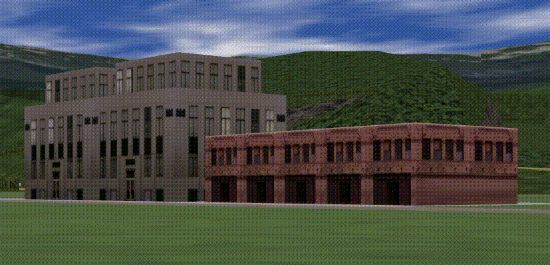
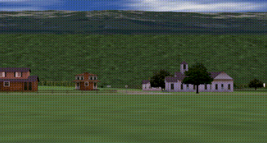
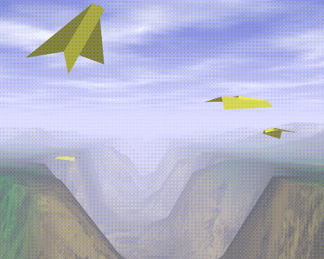

Plates 29 and 30. Two scenes snapped from a visual simulation program. The hills are composed of just a few polygons, but all the polygons are texture-mapped. Similarly, the buildings are composed of only a few textured rectangular walls. See Chapter 2
, Chapter 3, and Chapter 9.

Figure J-39 : Plate 29

Figure J-40 : Plate 30
Plate 31. Another scene from a different visual simulation program. The hills are textured, and the scene is rendered with fog. The airplanes, obviously, are polygonal. See Chapter 2
, Chapter 3, Chapter 7, and Chapter 9.

Figure J-41 : Plate 31


![[IMAGE]](images/spot.gif)